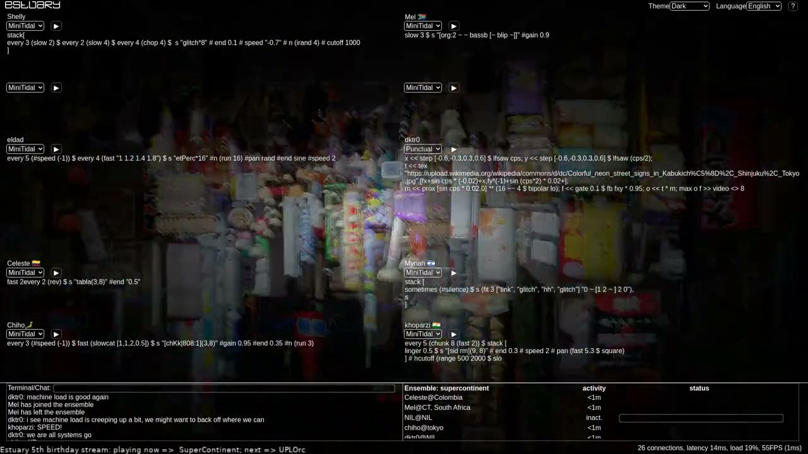
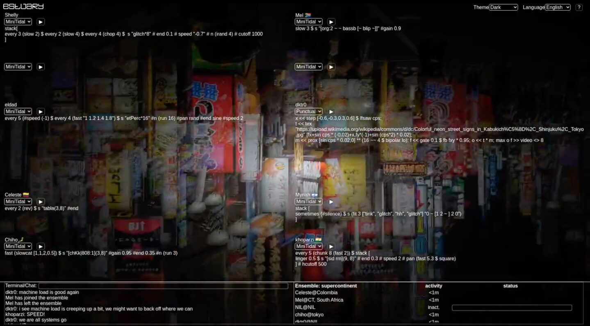

SuperContinent: Global, collective live coding improvisation
PROJECT DESCRIPTION
The global live coding ensemble SuperContinent proposes a live-streamed collective live coding performance for NIME, using the Estuary browser-based, collaborative live coding platform. Our improvised performance would last 10-15 minutes, would feature images and sound samples gathered by the members of the ensemble, and would make use of multiple live coding languages available within the Estuary platform (principally TidalCycles and Punctual). Since 2020 the ensemble has been developing various collective strategies for performance which define types of interaction and global musical parameters.
A defining feature of SuperContinent is that its members are globally distributed - with the ensemble’s growth constrained by the rule that any new members must be located more than 500 kilometres away from any existing member. The ensemble represents a unique global musical micro-community that would be impossible without the affordances of networking technologies, and is one of a relatively small number of “standing” network music ensembles that rehearse and perform regularly, with a defined yet evolving membership, over a number of years.
SuperContinent was initially formed as a sub-project of a larger research project, entitled “Platforms and practices for networked, language-neutral live coding”, supported by the Social Sciences and Humanities Research Council of Canada (SSHRC). That research project is developing the Estuary platform as a “container” that makes numerous, diverse approaches to live coding available on a zero-installation basis to a global, networked audience. While the larger research project makes new affordances available to SuperContinent, the ensemble represents one site where those affordances are evaluated, and where musical and audio-visual practices come into being around them.
PROGRAM NOTES
Global live coding ensemble SuperContinent will use the Estuary browser-based, collaborative live coding platform for an improvised, multi-lingual, live coding, audiovisual performance (music plus generative visuals). The performance features sounds and images gathered by the ensemble members for this performance (and shared for posterity via our CC0 sample library), captured in locations as diverse as the locations from which we will perform (Canada, Colombia, India, Israel, Japan, South Africa, United Kingdom).
PERFORMANCE REQUIREMENTS
While our performance makes use of the Estuary live coding platform, there are no specific technical requirements this imposes on the conference. We would livestream stereo audio and HD video to the conference participants in whatever way is deemed suitable (eg. we have commonly streamed to YouTube but are completely open to other livestreaming arrangements). We are also open to participating via a pre-recorded improvisation, created and uploaded specifically for NIME shortly before the conference.
If the livestream was to be presented in an “in person” space, a club setting would be appropriate. However, it is entirely possible for the work to simply be experienced via the online stream.
The work requires no performers beyond the improvising performers that are the members of the ensemble.
Feasibility: The ensemble has performed related improvisations at venues including the International Conference on Live Coding, the Network Music Festival, the Half Stack conference, and numerous algoraves in various countries around the world. The ensemble has been rehearsing weekly for the past two years.
MEDIA

▶NIME 2021 Music Submission - Video


NIME 2021 Music Submission - Image